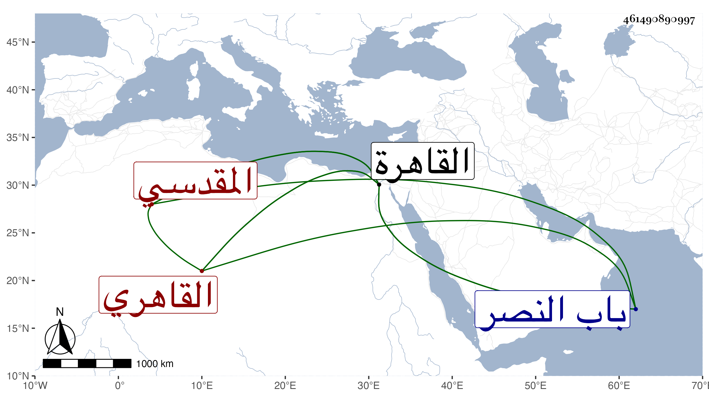

0902Sakhawi.DawLamic.ITO20230111-ara1.EIS1600.461490890997
Biography ID: 461490890997
320
أحمد بن محمد بن أبي بكر بن محمد بن سعد الله الشهاب أبو العباس المقدسي ثم القاهري ويعرف بالواسطي . ولد سنة خمس وأربعين وسبعمائة وسمع على الميدومي المسلسل وغيره وعلى البرهان بن جماعة ، وقدم القاهرة فأقام بها نيفا وعشرين سنة ولكن ما شعر به أهلها حتى أفادهم إياه الزين عبد الرحمن القلقشندي في سنة ست وعشرين فتبادر الناس إلى السماع منه واستدعى به كل من الولي العراقي وشيخنا والتلواني لمجلسه فأسمع عليه طلبته وأكثر الناس عنه ، وفي الموجودين ممن سمع منه الشهاب البيجوري الماضي ، وكان خيرا دينا يكثر الجلوس بالأدميين كأنه كان أدميا مواظبا على الصلاة على عاميته جلدا جاز التسعين وهو قوي البنية قليل الشيب لا يشك من رآه أنه لم يجز السبعين أو نحوها . مات في ليلة الأربعاء حادي عشر رجب سنة ست وثلاثين بالقاهرة وصلى عليه من الغد بالمصلى خارج باب النصر ودفن بالقرب من تربة الشيخ جوشن . وقد ذكره شيخنا في معجمه والمقريزي في عقوده كلاهما باختصار .
